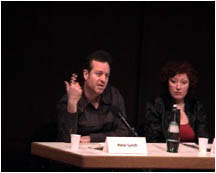
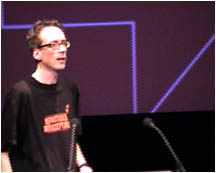

| user |
| home page |
|  |
|  | Just fill-out our online membership application and you'll soon be enjoying all the great benefits that membership has to offer. . Contact The Champaign-Urbana Computer Users Group by using our handy comment form. Champaign-Urbana Computer Users Group The Champaign-Urbana Computer Users Group was formed in 1983 to promote computing and education for users of personal computers. We currently support Macintosh, Windows and Linux personal computers. |